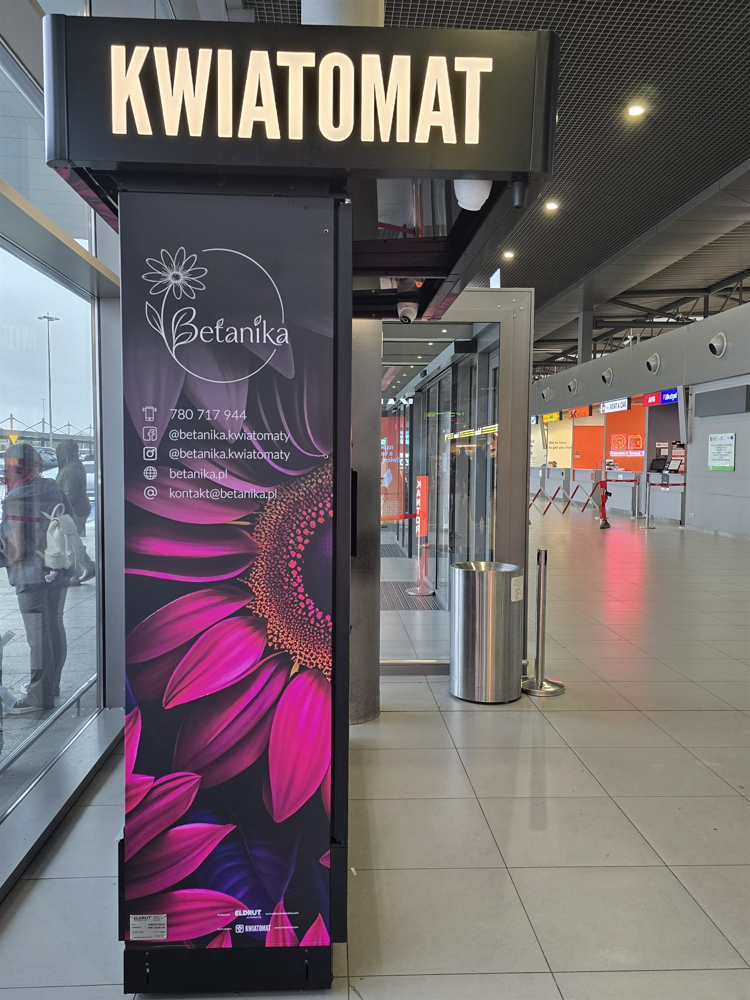

Betanika rozwija sprzedaż kwiatów dostępnych 24/7 i dlatego wybrała model K9 PRO. Według aktualnej oferty producenta urządzenie ma dziewięć dużych skrytek o wymiarach 51 × 48 cm (wysokość × szerokość). Taki układ pozwala prezentować kilka gotowych kompozycji jednocześnie, ale dla jakości kwiatów ważniejszy od samej liczby skrytek jest sposób kontrolowania warunków wewnątrz.
Chłodzenie i ogrzewanie
Seria PRO została wyposażona zarówno w system chłodzenia, jak i ogrzewania. Dzięki temu operator może reagować na różne warunki otoczenia i dobierać ustawienia odpowiednie dla przechowywanych kompozycji. K9 PRO ma trzy strefy klimatyczne, a rozwiązanie DIVISION COOLING dzieli urządzenie na moduły, co pozwala lepiej zarządzać warunkami niż w jednej wspólnej, otwartej komorze.
Samo chłodzenie nie powinno być rozumiane jako „im zimniej, tym lepiej”. Kwiaty różnią się wymaganiami, dlatego właściwe ustawienia oraz kontrola urządzenia nadal należą do operatora.
Wilgotność, wentylacja i obieg powietrza
Producent opisuje system BASSE CON jako rozwiązanie odpowiadające za utrzymywanie wilgotności, wentylację, usuwanie etylenu i równomierne rozprowadzanie powietrza. W praktyce są to elementy, które pomagają ograniczać niekorzystne różnice warunków pomiędzy częściami skrytki.
Usuwanie etylenu jest istotne, ponieważ gaz ten może przyspieszać procesy starzenia u części kwiatów ciętych. Równomierny obieg powietrza i kontrola wilgotności nie zastępują jednak czystej wody, prawidłowo przygotowanych łodyg ani regularnej oceny każdej kompozycji.
Drzwi, szkło i widoczność bukietów
K9 PRO wykorzystuje przyciemniane, hartowane wiatrołapy, system podwójnych drzwi oraz automatyczne domykanie. Te elementy pomagają domykać skrytki po zakupie i ograniczać przypadkowe pozostawienie ich otwartych. System ANTIFOG VI ma przeciwdziałać parowaniu, dzięki czemu klient może lepiej ocenić bukiet przez szybę przed wyborem.
Producent informuje również o wewnętrznych elementach wykonanych ze stali nierdzewnej. Taki materiał jest trwały i ułatwia regularne utrzymywanie powierzchni w czystości, lecz skuteczna higiena nadal wymaga systematycznej obsługi.

Zdalny monitoring wspiera szybką reakcję
Zależnie od wybranej konfiguracji aplikacja serii PRO może informować właściciela o sprzedaży, stanach oraz parametrach urządzenia. Producent wymienia też monitoring działania online lub offline i możliwość zdalnego otwierania skrytek. Dla operatora oznacza to lepszą informację o tym, kiedy potrzebne jest uzupełnienie automatu lub sprawdzenie jego działania.
Monitoring nie oceni samodzielnie kondycji każdego płatka. Dlatego technologia powinna działać razem z regularnym przeglądem kompozycji, sprzątaniem skrytek oraz wymianą bukietów zgodnie z ich rzeczywistym stanem.
Wygodny zakup przez całą dobę
Kwiatomat umożliwia sprzedaż 24/7. Według informacji producenta urządzenia mogą obsługiwać płatności kartą, BLIK-iem, Google Pay i Apple Pay. Klient ogląda dostępne kompozycje, wybiera skrytkę i postępuje zgodnie z instrukcjami na ekranie – bez dopasowywania wizyty do godzin kwiaciarni.
Co naprawdę wpływa na bezpieczeństwo kwiatów?
- Dobry materiał wyjściowy. Do automatu powinny trafiać prawidłowo przygotowane kompozycje.
- Kontrolowane warunki. Chłodzenie, ogrzewanie, wilgotność i obieg powietrza wymagają właściwych ustawień.
- Higiena. Skrytki oraz elementy mające kontakt z bukietami trzeba regularnie czyścić.
- Monitoring i uzupełnianie. Operator powinien sprawdzać działanie urządzenia oraz bieżący stan oferty.
- Ocena człowieka. Technologia wspiera pracę, ale nie zastępuje kontroli jakości kompozycji.
Źródła techniczne
Opis funkcji urządzenia powstał na podstawie aktualnych materiałów producenta: szczegółowej specyfikacji serii PRO firmy Eldrut Automatics oraz ogólnej strony kwiatomatów Eldrut. Parametry i wyposażenie producent może aktualizować, dlatego przy wyborze konkretnej konfiguracji należy sprawdzić bieżącą ofertę.